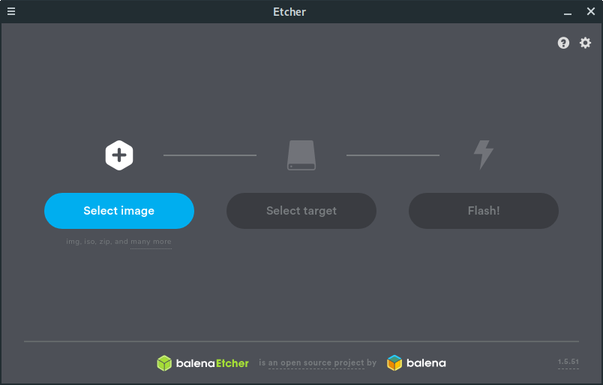

Cleep installation
Simplest solution
The simplest solution is to buy a sdcard with Cleep software preinstalled. You can find one in online Cleep shop.
Manual installation
- Plug your sdcard on your computer using USB adapter or embedded sdcard card reader
- Download Cleep image from Cleep website
- Install Etcher sdcard writer tool after downlading it from here
- Launch Etcher software

- Select previously downloaded image
- Choose your sdcard
- Click on "Flash!" button
Now you're ready to start your brand new device!
Connect ethernet cable to your router and plug power adapter to Raspberri Pi micro USB port.